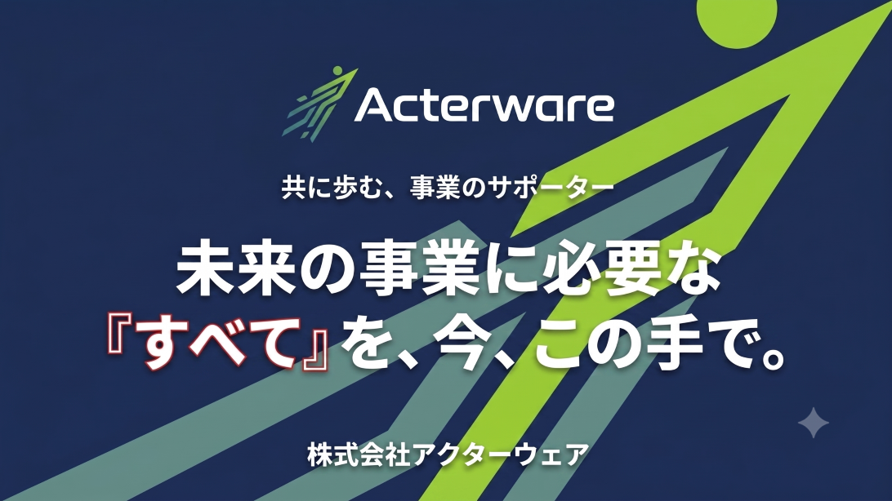
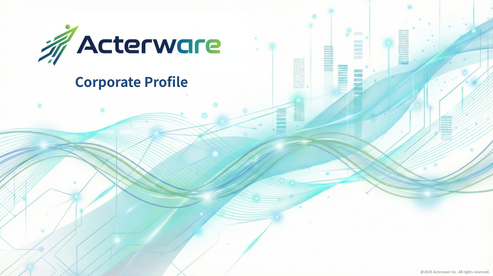
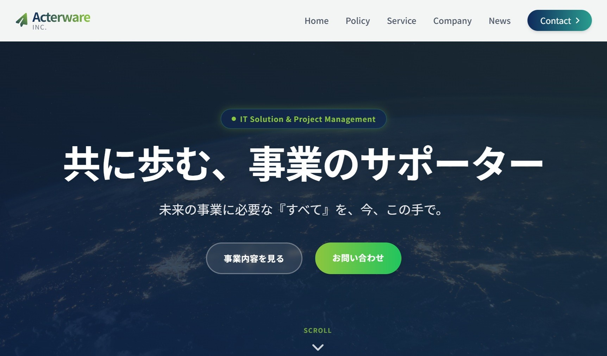
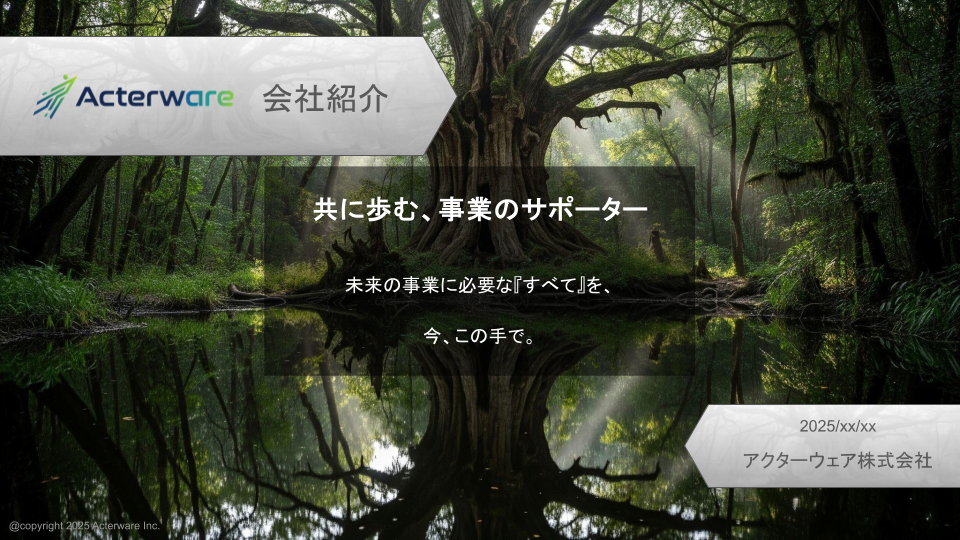
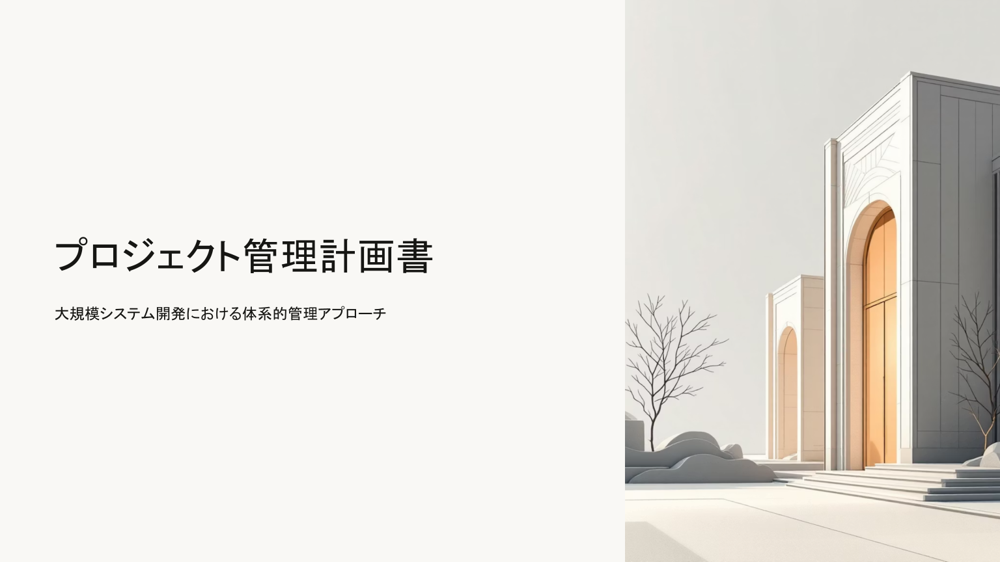
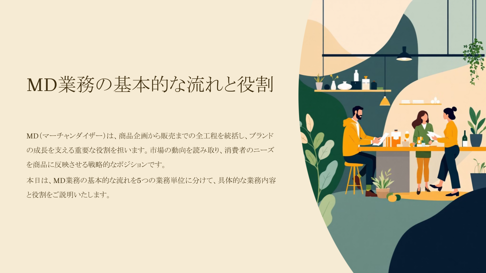

プロジェクトギャラリー
これまでに手掛けてきた、多種多様なプロジェクトの成果物の一部をご紹介します。
お客様のビジネスを成功に導くための軌跡です。

アクターウェア会社案内
サイトをリニューアルしたので、会社案内もリニューアルしました。
NotebookLMにリニューアルしたサイトのURLを指定し、スライド資料を作成してもらいました。その後、画像でダウンロードしてNanoBananaProで微修正したものです。
作成した全文は、PDFにて公開していますので、以下リンクからダウンロードしてください。
アクターウェア社パンフレット
Geminiの画像作成（NanoBananaPro）を活用して作成したパンフレットです。
パンフレットの内容はサイトから読み取ってもらって、構成とデザインはGeminiにおまかせでつくってもらいました。QRコードはなぜか読み取りできなかったので、別途作成した画像を貼り付けています。
画像生成AIの活用事例として、ぜひご覧ください。

Acterware Inc. Corporate Profile
会社案内旧バージョンです。
ベースとなる内容はGemini 3.1
Proで作成し、その内容をGoogleスライドに出力してからデザインの修正や画像の入れ替えを行っています。使用している画像はすべてGeminiあるいはGoogleスライド上で作成したものです。
作成した全文は、PDFにて公開していますので、以下リンクからダウンロードしてください。

ウェブデザイン ～コーポレートサイトデザイン～
Gemini3がリリースされたので、お試しにウェブサイトのデザインを作成してみました。
Acterwareのサイトをもとに、一般的なコーポレートサイトのコンテンツを作成するように指示して、一部修正を加える対話を行いながら作成したものです。ロゴのデザインを踏襲する色遣いをするなど、対話した内容が思い通りに反映できています。
Gemini君、なかなかいい仕事してくれます。
.png)
Geminiを使ったGoogleスライドの作成例
このスライドはGoogle
GeminiのCanvas機能を使って本文を作成し、Canvas機能内からGoogleスライドファイルを作成したものです。その後、Googleスライドの標準テーマを適用して、少し整形をしました。
GeminiからGoogleスライドの作成を試すために作成したものですので本文の内容の精査はしていない前提にはなりますが、このスライド作成に実質30分程度で作成しています。Geminiも日々進化しているようで、業務資料の作成に非常に役立つツールになってきていると思います。

会社紹介資料
コーポレートサイトデザインがある程度完成したので、そのテイストに合わせて会社紹介資料のデザインをしてみました。※記載されている内容はサンプルです。
この資料はGoogle Slideで一から作成しています。
背景画像やロゴ、ワンポイントの画像などは、AI（Gemini）を使用して作成しています。
トップスライドのキャッチコピーもAIを活用して作成したものです。

プロジェクト管理計画書
社内で使用するシステム開発プロジェクトのプロジェクト管理標準を策定したものです。（記載している内容はサンプルです）内容の性質から文字を中心とした固い感じの資料になっています。各スライドには、各スライドの内容をイメージできるイラストを載せています。
元はPowerPointで作成していますが、公開するにあたってPDFに変換しています。

MD業務の基本的な流れと役割
自社サービスはMD業務をSaasサービス化したものですが、システム開発を行うにあたって、新規に参画するプロジェクトメンバーに「MD業務とは何か？」を説明するために作成した資料です。社内向けの資料ですので、イラストを多く使って遊び心を加えています。
元はPowerPointで作成していますが、公開するにあたってPDFに変換しています。

Fit to Standardを成功させる標準的な進め方と 実践ステップ7選
自社サービスをクライアント企業に提案するにあたって、Fit to Standardの導入方法を適用することから、Fit to
Standardの必要性を理解していただくために、作成した資料です。※提案資料からの抜粋です。
Fit to
Standardでのシステム導入経験がない企業様ですので、システム部門のみならず業務部門の皆様にもご理解いただくために、ポイントを絞った説明にしています。
元はPowerPointで作成していますが、公開するにあたってPDFに変換しています。